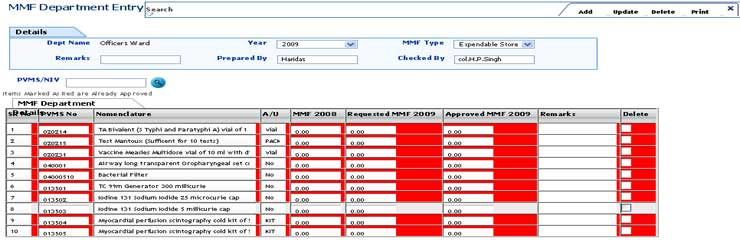
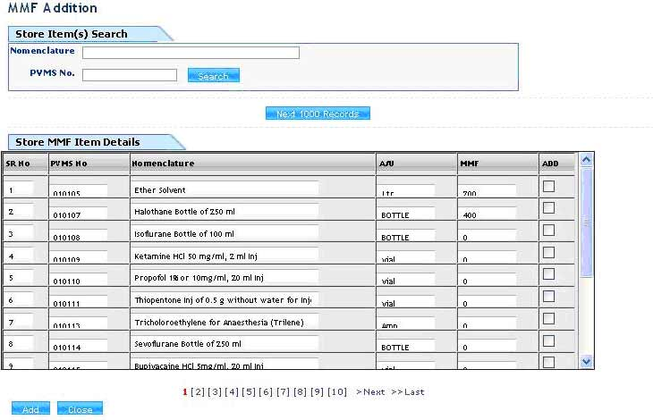

MMF Department Entry
Screen Overview
This screen captures the details of MMF (Monthly maintenance figure) entry by department/ward/store. This screen is used to enter requested MMF item wise for login department.


Details
Dept Name:
Login department name will be displayed by the system.
Year:
Select year from the list. This is mandatory.
MMF Type:
Select “Expendable Store” or “ECHS” from the list for required MMF.
Remarks:
User can write remarks.
Prepared by:
User can write prepared by.
Checked by:
User can write checked by.
PVMS/NIV:
If user wants to search for any PVMS or NIV item in grid then write PVMS/NIV code and click on search button.
Add (Button):
By clicking on Add button new screen MMF addition will be displayed with item name and item code in grid. User can select item, write MMF qty & select add option. Following screen will be displayed after clicking on add button.
Add (Button):
By clicking on Add button all selected item will be saved.
Close (Button):
By clicking on close button current screen will be closed & selected item will be displayed in main screen.
Update (Button):
By clicking on Update button changed data will be update.
Delete (Button):
By clicking on Delete button selected row in grid will be deleted.
Print (Button):
By clicking on Print button department requested MMF will be printed.
Search (Button):
By clicking on search button previous saved data will be search based on MMF No.
Import (Button):
By clicking on import button previous year saved data will be imported in current year.